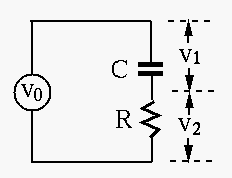
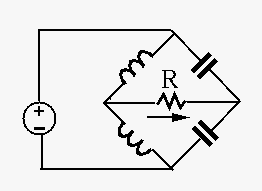

The circuit shown below takes an input
 and generates
two outputs and
and generates
two outputs and  .
.

Solution:
For frequency ,
For frequency  ,
,
In the bridge circuit shown below, both and both ,
and the input voltage is
. Find the current
through the resistor  .
.

Solution:
Use Thevenin's method:
Remove  as the load of the rest of the circuit, which can be treated
as a voltage source by Thevenin's theorem. First find :
as the load of the rest of the circuit, which can be treated
as a voltage source by Thevenin's theorem. First find :
Alternatively, we can convert the top half of the bridge from delta to Y
to get
Hints: Use , and (no need to solve DE!).
For second period, assume , and use  as the initial
value. In the final expression, replace by .
as the initial
value. In the final expression, replace by .

Solution: